[InputCalendar] 입력, 출력 서식 지정하기
1개요
지정된 입출력 서식에 따라 value로 할당된 값이 표현된 것을 비교합니다. - 입력 서식 : 속성 ioFormat - 출력 서식 : 속성 displayFormat - 캘린더의 선택된 날짜 서식 : 속성 calendarDisplayFormat
2구현된 기능
[기본 설정] 입력 서식 : 연월일 / 출력 서식 : 연-월-일
입력 서식 : 월일연 / 출력 서식 : 월-일-연
입력 서식 : 연월일 / 출력 서식 : 월-일-연
입력 서식 : 월일연 / 출력 서식 : 연-월-일
3예제 테스트 방법
3.1[기본 설정] 입력 서식 : 연월일 / 출력 서식 : 연-월-일
- STEP1. "연월일" 형식의 value를 할당합니다.
영역 [[기본 설정] 입력 서식 : 연월일 / 출력 서식 : 연-월-일]의 버튼 setValue( '20220815' )을 클릭합니다.
[브라우저(Chrome) 실행 예시]
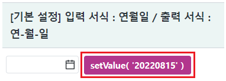
- STEP2. 실행 결과를 확인합니다.
InputCalendar에 value로 '20220815'가 할당됩니다.
InputCalendar에 '2022-08-15'가 출력됩니다.
[브라우저(Chrome) 실행 예시]

- STEP3. InputCalendar의 캘린더 아이콘을 클릭합니다.
[브라우저(Chrome) 실행 예시 - 캘린더 아이콘]
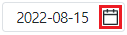
- STEP4. 실행 결과를 확인합니다.
캘린더의 선택된 날짜가 '2022-08-15'로 출력됩니다.
[브라우저(Chrome) 실행 예시 - 캘린더]
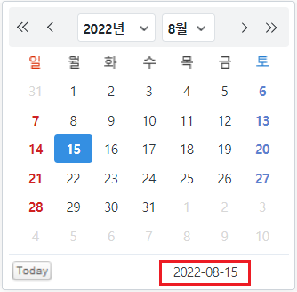
3.2입력 서식 : 월일연 / 출력 서식 : 월-일-연
- STEP1. "월일연" 형식의 value를 할당합니다.
영역 [입력 서식 : 월일연 / 출력 서식 : 월-일-연]의 버튼 setValue( '08152022' )을 클릭합니다.
[브라우저(Chrome) 실행 예시]
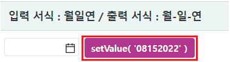
- STEP2. 실행 결과를 확인합니다.
InputCalendar에 value로 '08152022'가 할당됩니다.
InputCalendar에 '08-15-2022'가 출력됩니다.
[브라우저(Chrome) 실행 예시]
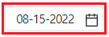
- STEP3. InputCalendar의 캘린더 아이콘을 클릭합니다.
[브라우저(Chrome) 실행 예시 - 캘린더 아이콘]
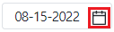
- STEP4. 실행 결과를 확인합니다.
캘린더의 선택된 날짜가 '08-15-2022'로 출력됩니다.
[브라우저(Chrome) 실행 예시 - 캘린더]
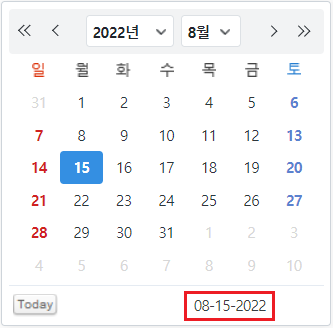
3.3입력 서식 : 연월일 / 출력 서식 : 월-일-연
- STEP1. "연월일" 형식의 value를 할당합니다.
영역 [입력 서식 : 연월일 / 출력 서식 : 월-일-연]의 버튼 setValue( '20220815' )을 클릭합니다.
[브라우저(Chrome) 실행 예시]
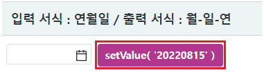
- STEP2. 실행 결과를 확인합니다.
InputCalendar에 value로 '20220815'가 할당됩니다.
InputCalendar에 '08-15-2022'가 출력됩니다.
[브라우저(Chrome) 실행 예시]

- STEP3. InputCalendar의 캘린더 아이콘을 클릭합니다.
[브라우저(Chrome) 실행 예시 - 캘린더 아이콘]
- STEP4. 실행 결과를 확인합니다.
캘린더의 선택된 날짜가 '08-15-2022'로 출력됩니다.
[브라우저(Chrome) 실행 예시 - 캘린더]
3.4입력 서식 : 월일연 / 출력 서식 : 연-월-일
- STEP1. "월일연" 형식의 value를 할당합니다.
영역 [입력 서식 : 월일연 / 출력 서식 : 연-월-일]의 버튼 setValue( '08152022' )을 클릭합니다.
[브라우저(Chrome) 실행 예시]
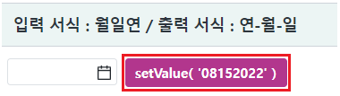
- STEP2. 실행 결과를 확인합니다.
InputCalendar에 value로 '08152022'가 할당됩니다.
InputCalendar에 '2022-08-15'가 출력됩니다.
[브라우저(Chrome) 실행 예시]
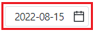
- STEP3. InputCalendar의 캘린더 아이콘을 클릭합니다.
[브라우저(Chrome) 실행 예시 - 캘린더 아이콘]
- STEP4. 실행 결과를 확인합니다.
캘린더의 선택된 날짜가 '2022-08-15'로 출력됩니다.
[브라우저(Chrome) 실행 예시 - 캘린더]
4구현 예시
4.1입력 서식 : 월일연 / 출력 서식 : 월-일-연
속성을 지정합니다.
[필수] ioFormat="MMddyyyy" //[defulat:yyyyMMdd] 사용자가 data를 입력하는 순서와 format 매칭시켜주는 기능이다.('y','M','d','H','m' 문자만 허용한다.)
[필수] displayFormat="MM-dd-yyyy" //input에 표현될 년월일에 대한 format으로 delimiter속성은 무시된다.
[필수] calendarDisplayFormat="MM-dd-yyyy" //inputCalendar의 displayFormat 속성과는 별도로 달력에 표시되는 날짜 자체의 displayFormat을 설정하고자 할 때 사용한다.
그림 1.웹스퀘어5 SP5 스튜디오의 Property View(속성창) 예시
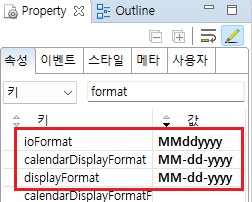
[소스 코드 예시]
<!-- inputCalendar 의 소스 본문 예시 --> <w2:inputCalendar ioFormat="MMddyyyy" displayFormat="MM-dd-yyyy" calendarDisplayFormat="MM-dd-yyyy" calendarValueType="yearMonthDate" > </w2:inputCalendar>
4.2입력 서식 : 연월일 / 출력 서식 : 월-일-연
속성을 지정합니다.
[필수] ioFormat="yyyyMMdd" //[defulat:yyyyMMdd] 사용자가 data를 입력하는 순서와 format 매칭시켜주는 기능이다.('y','M','d','H','m' 문자만 허용한다.)
[필수] displayFormat="MM-dd-yyyy" //input에 표현될 년월일에 대한 format으로 delimiter속성은 무시된다.
[필수] calendarDisplayFormat="MM-dd-yyyy" //inputCalendar의 displayFormat 속성과는 별도로 달력에 표시되는 날짜 자체의 displayFormat을 설정하고자 할 때 사용한다.
그림 2.웹스퀘어5 SP5 스튜디오의 Property View(속성창) 예시
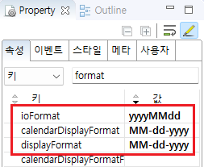
[소스 코드 예시]
<!-- inputCalendar 의 소스 본문 예시 --> <w2:inputCalendar ioFormat="yyyyMMdd" displayFormat="MM-dd-yyyy" calendarDisplayFormat="MM-dd-yyyy" calendarValueType="yearMonthDate" > </w2:inputCalendar>
4.3입력 서식 : 월일연 / 출력 서식 : 연-월-일
속성을 지정합니다.
[필수] ioFormat="MMddyyyy" //[defulat:yyyyMMdd] 사용자가 data를 입력하는 순서와 format 매칭시켜주는 기능이다.('y','M','d','H','m' 문자만 허용한다.)
[필수] displayFormat="yyyy-MM-dd" //input에 표현될 년월일에 대한 format으로 delimiter속성은 무시된다.
[필수] calendarDisplayFormat="yyyy-MM-dd" //inputCalendar의 displayFormat 속성과는 별도로 달력에 표시되는 날짜 자체의 displayFormat을 설정하고자 할 때 사용한다.
그림 3.웹스퀘어5 SP5 스튜디오의 Property View(속성창) 예시
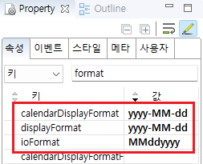
[소스 코드 예시]
<!-- inputCalendar 의 소스 본문 예시 --> <w2:inputCalendar ioFormat="MMddyyyy" displayFormat="yyyy-MM-dd" calendarDisplayFormat="yyyy-MM-dd" calendarValueType="yearMonthDate" > </w2:inputCalendar>
5주요 API
calendarDisplayFormat
displayFormat
ioFormat
calendarDisplayFormatFunc
displayFormatFunc
setDisplayFormat( format )
setIoFormat( ioFormat , displayFormat )
6참고 문서
[웹스퀘어5 SP5 개발 가이드] InputCalendar
링크 : https://docs1.inswave.com/sp5_user_guide/8df43d1f59fab704#579244ff7483b50c
[웹스퀘어5 SP5 개발 가이드] InputCalendar - 날짜 입출력 형식
링크 : https://docs1.inswave.com/sp5_user_guide/8df43d1f59fab704#7861fc46f14857bf
7참고 동영상
InputCalendar - 날짜 입출력 형식
링크 : https://youtu.be/Z_SgdHf7Nw8
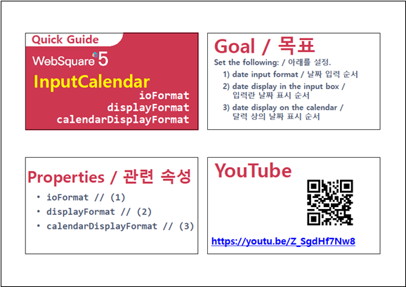